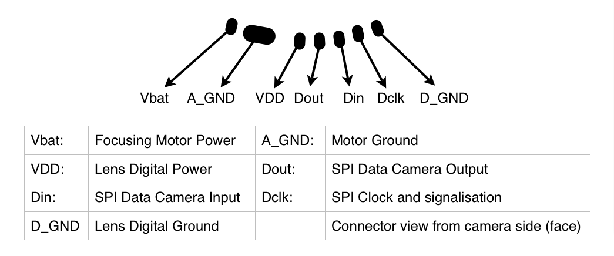

00 Genel Bakış — STM32, Lens ve Aralarındaki Bağlantı
Canon EF lensler focus ve diyaframlarını 3 sinyal hattı üzerinden elektronik olarak kontrol eder. Bu hatları bir kamera gövdesi yerine STM32 sürdüğünde lens kameradan habersiz olarak tam olarak itaat eder.
Ne yapıyoruz?
STM32, Canon EF mount üzerindeki 3 sinyal hattına (Dclk · Dout · Din) doğrudan bağlanır ve SPI Master olarak çalışır. PC'den UART üzerinden gönderilen komutlar (ör. f+ 200, a 5.6) STM32 tarafından Canon EF byte dizilerine çevrilip lense iletilir.
┌─────────────────────────────────────────────────────────────────┐
│ Genel sistem akışı │
└─────────────────────────────────────────────────────────────────┘
PC / Terminal Canon EF Lens
(PuTTY, minicom) (herhangi EF/EF-S)
│ │
│ USB — ST-Link VCP │
│ 115200 baud │
▼ │
┌────────────────────────────────────────┐ │
│ NUCLEO-L432KC │ │
│ │ │
│ USART2 ──► CLI parser │ │
│ │ │ │
│ ▼ │ │
│ ef_lens.c │ 3 sinyal hattı │
│ │ │ (5 V CMOS) │
│ ▼ │ │
│ SPI1 Master ────────────────►├── Dclk ─────────►│
│ ├── Dout ─────────►│
│ │◄─ Din ──────────│
│ │ │
│ VBUS (5 V) ──────────────────────────►├── VDD ─────────►│
│ Boost (6 V) ─────────────────────────►├── VBAT ─────────►│
│ GND ─────────────────────────────────►├── GND ─────────►│
└────────────────────────────────────────┘ │
│
Kamera gerekmez
STM32 lensin bakış açısından tam olarak bir Canon kamera gövdesidir: clock'u o üretir, komutları o gönderir, yanıtları o okur. Lens bu ayrımı yapamaz.
Bu rapordaki dosyalar
| Dosya | Rol |
|---|---|
| Core/Inc/ef_lens.h | EF protokol sabitleri, struct tanımları, fonksiyon prototipleri |
| Core/Src/ef_lens.c | SPI transaction motoru, tüm EF komut implementasyonları |
| Core/Src/main.c | UART CLI döngüsü, printf yönlendirmesi |
| *.ioc | CubeMX: SPI1 Mode 3, USART2, 80 MHz PLL |
01 Canon EF Mount Pinout — 7 Kontak, Voltajlar, Fiziksel Konum
Canon EF-S mount lensin arkasında 7 altın kaplama kontak bulunur: iki güç hattı, iki toprak ve üç sinyal hattı. Kamera cephesinden bakışta soldan sağa sıralanır: Vbat · A_GND · VDD · Dout · Din · Dclk · D_GND.
Resmi pinout diyagramı

Kontak sırası (kamera cephesinden, soldan sağa)
Kamera cephesinden görünüm — lensin arka yüzüne bakış:
╔═══════════════════════════════════════════════════════╗
║ ║
║ ┌─────┐ ┌─────┐ ┌─────┐ ┌─────┐ ┌─────┐ ┌─────┐ ┌─────┐
║ │Vbat │ │A_GND│ │ VDD │ │Dout │ │ Din │ │Dclk │ │D_GND│
║ └─────┘ └─────┘ └─────┘ └─────┘ └─────┘ └─────┘ └─────┘
║
╚═══════════════════════════════════════════════════════╝
Vbat: ~6 V Motor güç A_GND: 0 V Motor toprağı
VDD: 5 V Mantık beslemesi D_GND: 0 V Dijital toprak
Dout: 5 V STM32 → Lens (MOSI) Din: 5 V Lens → STM32 (MISO)
Dclk: 5 V STM32 → Lens (SCK)
Pin tablosu
| Kontak | Sinyal | Voltaj | Yön | İşlev |
|---|---|---|---|---|
| 1 | Vbat | ~6 V | STM32 → Lens | Focus motor güç kaynağı (Focusing Motor Power). USM / STM motorlar bu hattan beslenir. MT3608 boost converter veya 4×AA pil. |
| 2 | A_GND | 0 V | — | Motor toprağı (Motor Ground). Vbat geri dönüş hattı. STM32 GND'ye bağlanır. |
| 3 | VDD | 5 V | STM32 → Lens | Lens dijital güç (Lens Digital Power). Lens MCU ve sinyal devresi beslemesi. USB VBUS doğrudan kullanılabilir. |
| 4 | Dout | 5 V CMOS | STM32 → Lens | SPI Data Camera Output — kamera/STM32'nin lense gönderdiği veri (MOSI). Komut byte'ları bu hattan gönderilir. |
| 5 | Din | 5 V CMOS | Lens → STM32 | SPI Data Camera Input — lensin kameraya/STM32'ye gönderdiği yanıt (MISO). Lens yanıtları bu hattan okunur. |
| 6 | Dclk | 5 V CMOS | STM32 → Lens | SPI Clock and signalisation — senkron seri saat. STM32 üretir, lens alır. Idle HIGH (SPI Mode 3). |
| 7 | D_GND | 0 V | — | Dijital sinyal toprağı (Lens Digital Ground). A_GND'den bağımsız, gürültü yalıtımı için ayrı tutulur. |
VDD = 5 V (mantık), Vbat = 6 V (motor), sinyal hatları (Dout · Din · Dclk) = 5 V CMOS. STM32L432KC 3.3 V çıkışı üretir; Dout ve Dclk için 74AHCT125 seviye çevirici, Vbat için 6 V boost converter veya 4×AA pil gerekir.
Konektör seçenekleri
Canon RF mount (EOS R serisi) tamamen farklı protokol kullanır: farklı pin sayısı, farklı voltajlar, farklı komut seti. EF-M mount da farklıdır. Bu rehber yalnızca klasik EF ve EF-S lenslere uygulanır.
02 NUCLEO-L432KC Pin Haritası — Hangi Pin Nereye?
NUCLEO-L432KC, Arduino Nano uyumlu başlık pinlerine sahip küçük bir geliştirme kartıdır. SPI1 çevrimi PA5/PA6/PA7 pinlerine, USART2 ise PA2/PA3 pinlerine yönlendirilmiştir.
NUCLEO-L432KC kart düzeni
NUCLEO-L432KC
┌──────────────────────┐
USB/ST-Link│ ┌──────────────┐ │
(VCP+güç) ─┤ │ STM32L432KC │ │
│ └──────────────┘ │
│ │
CN3 (sol)│ │CN4 (sağ)
═══════════ ════════════
D1 PA2 TX│ │PA5 D13 SCK ← SPI1_SCK → Dclk
D0 PA3 RX│ │PA6 D12 MISO ← SPI1_MISO ← Din
PA4 │ │PA7 D11 MOSI ← SPI1_MOSI → Dout
PB0 │ │PB0 D10 (CS — kullanılmaz)
PB7 │ │
PB6 │ │
5V VBUS──┤ ├── 5V (VDD'ye)
GND │ ├── GND
3V3 │ │
└──────────────────────┘
PA2 (TX) → ST-Link → USB → PC terminal (115200 baud)
PA3 (RX) → ST-Link → USB → PC terminal
SPI1 pin ataması
| STM32 Pin | Arduino Etiketi | SPI Fonksiyonu | → | Canon EF Sinyali | Kontak # |
|---|---|---|---|---|---|
| PA5 | D13 | SPI1_SCK | → | Dclk (saat) | 6 |
| PA7 | D11 | SPI1_MOSI | → | Dout (veri: STM32→lens) | 4 |
| PA6 | D12 | SPI1_MISO | ← | Din (veri: lens→STM32) | 5 |
Güç pinleri
| NUCLEO Pin | Voltaj | → | Canon EF Pin | Sinyal |
|---|---|---|---|---|
| 5V (VBUS) | 5 V | → | Kontak 3 | VDD (mantık beslemesi) |
| Boost çıkışı | 6 V | → | Kontak 1 | Vbat (motor beslemesi) |
| GND | 0 V | → | Kontak 2 | A_GND (motor toprağı) |
| GND | 0 V | → | Kontak 7 | D_GND (sinyal toprağı) |
STM32L432KC veri sayfasına göre PA6 FT (Five-Volt Tolerant) giriş pinidir. Lens'ten gelen 5 V Din sinyalini doğrudan alabilir. Buna rağmen voltaj bölücü kullanmak MCU ömrü açısından iyi bir pratiktir.
03 Devre Şeması — 74AHCT125, Voltaj Bölücü ve 6 V Güç Kaynağı
STM32 3.3 V GPIO çıkışı üretir; Canon EF mount 5 V CMOS seviyesi bekler. Dout ve Dclk çıkış hatları için 74AHCT125 seviye çevirici, Din giriş hattı için voltaj bölücü ve lens motoru için 6 V kaynak gereklidir.
Neden seviye çevirici?
74AHCT125 — devre bağlantısı
74AHCT125 (DIP-14 veya SOIC-14) iç yapısı:
Her kapı: 1 giriş (nA) + 1 output enable (nOE, active LOW) + 1 çıkış (nY)
┌─────────────────────────────────────┐
│ 74AHCT125 │
│ │
│ VCC ── 14 (5V bağlanır) │
│ GND ── 7 │
│ │
│ 1OE ── 1 → GND (her zaman aktif) │
│ 1A ── 2 ← PA5 (SCK, 3.3V) │
│ 1Y ── 3 → Dclk (Canon kontak 6) │ → 5V çıkış
│ │
│ 2OE ── 4 → GND (her zaman aktif) │
│ 2A ── 5 ← PA7 (MOSI, 3.3V) │
│ 2Y ── 6 → Dout (Canon kontak 4) │ → 5V çıkış
│ │
│ 3A, 3OE, 3Y, 4A, 4OE, 4Y: │
│ kullanılmaz (bağlama veya float) │
└─────────────────────────────────────┘
Din → PA6 (MISO) için voltaj bölücü:
Canon kontak 5 (Din, 5V)
│
10 kΩ
│
├──────── PA6 (MISO, 3.3V max input)
│
20 kΩ
│
GND
Bölücü çıkışı = 5V × 20/(10+20) = 3.33 V ✓
6 V motor güç kaynağı (VBAT)
USB VBUS 5 V verir; lens USM motoru için 6 V gerekir. Düşük voltajda motor yeterli tork üretemez, odak atlar veya hiç hareket etmez.
| Yöntem | Maliyet | Notlar |
|---|---|---|
| MT3608 boost modülü | ~20 ₺ | USB 5V → ayarlanabilir boost. Trimpotu çevirerek tam 6.00 V'a getir. Aliexpress: "MT3608 step up module". En pratik çözüm. |
| 4 × AA alkalin pil | ~15 ₺ | Yeni pilde 6.4 V, kullanıldıkça düşer. Prototip için yeterli ama düzensiz voltaj. |
| IP2312 + Li-Ion 2S | ~80 ₺ | Şarj edilebilir, sabit voltaj. Taşınabilir setup için ideal. |
MT3608'in çıkışına multimetre bağla, trimpotu yavaşça saat yönünde çevir. Tam olarak 6.00 V'ta durdur. 6.5 V üzeri lens motor sürücüsüne kalıcı hasar verebilir.
Tam bağlantı şeması
NUCLEO-L432KC 74AHCT125 Canon EF Mount
───────────── ───────── ──────────────
PA5 (D13, SCK ) ────────────► 1A → 1Y ──────────► kontak 6 Dclk
PA7 (D11, MOSI) ────────────► 2A → 2Y ──────────► kontak 4 Dout
PA6 (D12, MISO) ◄──[10k+20k]───────────────────── kontak 5 Din
▲
VCC(5V)────────┘ (74AHCT125 VCC)
5V (VBUS) ──────────────────────────────────────► kontak 3 VDD
MT3608 (6V) ─────────────────────────────────────► kontak 1 Vbat
GND ─────────────────────────────────────────────► kontak 2 A_GND
GND ─────────────────────────────────────────────► kontak 7 D_GND
Güç sırası: VDD (5V) önce → Vbat (6V) sonra
Canon lenslerin büyük çoğunluğu VDD'nin önce gelmesini bekler: önce 5 V mantık gerilimi, ardından 6 V motor gerilimi. Ters sıra lens firmware'ini undefined state'e sokabilir. Pratik uygulama: VBUS (VDD) her zaman açık, VBAT hattına küçük bir anahtar veya jumper koy.
04 SPI Mode 3 — Neden Bu Ayarlar, Nasıl Çalışır?
Canon EF low-side protokolü elektriksel olarak tam olarak SPI Mode 3'tür: clock idle HIGH, veriler clock'un yükselen kenarında örneklenir. Chip select yoktur, yarı-çift yönlü akış STM32'nin full-duplex SPI'ı ile yönetilir.
SPI mod matrisi
| Mod | CPOL | CPHA | Clock idle | Örnekleme |
|---|---|---|---|---|
| 0 | 0 | 0 | LOW | Yükselen kenar |
| 1 | 0 | 1 | LOW | Düşen kenar |
| 2 | 1 | 0 | HIGH | Düşen kenar |
| 3 | 1 | 1 | HIGH | Yükselen kenar |
Canon EF: Dclk idle HIGH → CPOL=1. Veri yükselen kenarda latçlanır → CPHA=1. Sonuç: Mode 3.
Zamanlama diyagramı
Örnek — 0xEB baytının iletimi (lens ID, binary: 1110 1011)
İşlem: 7 6 5 4 3 2 1 0
MSB LSB
Dclk ‾‾‾‾‾|___|‾|___|‾|___|‾|___|‾|___|‾|___|‾|___|‾|___|‾‾‾‾‾
↑ ↑
idle HIGH idle HIGH
Dout ─────╔═══╗ ╔═══╗ ╔═══╗ ╔═══╗ ╔═══╗ ╔╗ ╔═══╗ ╔═══╗─────
(MOSI) ║ 1 ║ ║ 1 ║ ║ 1 ║ ║ 0 ║ ║ 1 ║ ║0║ ║ 1 ║ ║ 1 ║
╚═══╝ ╚═══╝ ╚═══╝ ╚═══╝ ╚═══╝ ╚╝ ╚═══╝ ╚═══╝
Din ─────╔════════════════════════════════════════════╗────
(MISO) ║ lens yanıtı (önceki komutun sonucu) ║
╚════════════════════════════════════════════╝
↑ Her bit Dclk düşen kenarda değişir,
yükselen kenarda örneklenir (CPHA=1)
Saat frekansı
STM32L432KC @ 80 MHz. Canon EF tolerans bandı: 62.5 – 125 kHz.
SPI1 prescaler seçenekleri (80 MHz PCLK):
Prescaler │ Frekans │ Canon EF uyumu
──────────┼────────────┼──────────────────
256 │ 312.5 kHz │ ✗ Çok hızlı
512 │ 156.3 kHz │ ✗ Sınırın üstünde
1024 │ 78.1 kHz │ ✓ Tam ortada ← SEÇ
2048 │ 39.1 kHz │ ✗ Gereksiz yavaş
Chip select yok
Canon EF'de CS (chip select / NSS) yoktur. STM32 SPI1'de NSS Software moduna alınır ve hiçbir pin CS olarak atanmaz. Clock yükselince lens transaction başladığını anlar, idle HIGH'a dönünce biter.
Half-duplex yönetimi
Canon EF fiziksel olarak half-duplex gibi davranır: komut gönderirken lens susarken, yanıt alırken STM32 anlamlı veri göndermez. STM32 SPI1 full-duplex modunda çalışır; bu fark şöyle yönetilir:
05 CubeMX Konfigürasyonu — SPI1, USART2 ve Saat Ağacı
STM32CubeMX ile çevre birimi yapılandırması yapılır, HAL başlatma kodu üretilir. Board seçimi: NUCLEO-L432KC.
1 — Saat ağacı: 80 MHz
PLL Source : HSI (16 MHz)
PLL/M : 1 → 16 MHz
PLL/N : ×10 → 160 MHz
PLL/R : /2 → 80 MHz
SYSCLK : 80 MHz
AHB Prescaler : /1 → HCLK = 80 MHz
APB1 Prescaler : /1 → PCLK1 = 80 MHz ← SPI1 buradan beslenecek
APB2 Prescaler : /1 → PCLK2 = 80 MHz2 — SPI1 ayarları
3 — USART2 ayarları
4 — Üretilen başlatma kodu
static void MX_SPI1_Init(void)
{
hspi1.Instance = SPI1;
hspi1.Init.Mode = SPI_MODE_MASTER;
hspi1.Init.Direction = SPI_DIRECTION_2LINES; /* full-duplex */
hspi1.Init.DataSize = SPI_DATASIZE_8BIT;
hspi1.Init.CLKPolarity = SPI_POLARITY_HIGH; /* CPOL = 1 */
hspi1.Init.CLKPhase = SPI_PHASE_2EDGE; /* CPHA = 1 → Mode 3 */
hspi1.Init.NSS = SPI_NSS_SOFT; /* CS yok */
hspi1.Init.BaudRatePrescaler = SPI_BAUDRATEPRESCALER_1024; /* 78.125 kHz */
hspi1.Init.FirstBit = SPI_FIRSTBIT_MSB;
hspi1.Init.TIMode = SPI_TIMODE_DISABLE;
hspi1.Init.CRCCalculation = SPI_CRCCALCULATION_DISABLE;
HAL_SPI_Init(&hspi1);
}Diyafram değerlerini yazdırmak için (f/%.1f) kayan nokta printf desteği gerekir. CubeMX Project Manager → Advanced Settings → "Use float with printf from newlib-nano" kutusunu işaretle. Yoksa diyafram çıktıları boş gelir.
06 Canon EF Protokolü — Komut Formatı ve Bilinen Byte Dizileri
Canon EF low-side protokolü resmi olarak belgelenmemiştir. Buradaki komutlar Magic Lantern, OpenEF ve çeşitli topluluk RE projelerinden derlenen kamuya açık bilgiye dayanır. Standart EF/EF-S lenslerin büyük çoğunluğunda çalışır.
Transaction yapısı
Her Canon EF işlemi şu sırayı izler:
① STM32 → Lens : komut byte'ı gönderilir (Dout hattı, 1 byte)
② 5–20 µs beklenir (lens MCU işleme süresi)
③ STM32 → Lens : varsa parametre byte'ları (yine Dout, N byte)
④ 20 µs beklenir
⑤ Lens → STM32 : yanıt byte'ları okunur (Din hattı, M byte)
(STM32 dummy 0x00 gönderir, Dclk üretmek için)
⑥ ≥ 1 ms beklenir → sonraki transaction
Komut tablosu
| Byte | Komut | Parametre | Yanıt | Açıklama |
|---|---|---|---|---|
0x0A | INIT | — | 8–16 byte | Lens başlatma. Lens ID, tip bayrakları, diyafram aralığı, focal length. |
0x0D | STATUS | — | 4 byte | Anlık durum: motor hareketli mi, encoder pozisyonu. |
0x44 | FOCUS MOVE | yön + hız + 2× adım | 1 byte ACK | Focus motoru belirli adım hareket ettir. |
0x06 | FOCUS STOP | — | 1 byte ACK | Hareket eden focus motorunu durdur. |
0xA0 | FOCUS INF | — | 1 byte ACK | Focus motorunu sonsuz yönünde tam hızda çalıştır. |
0xB0 | FOCUS NEAR | — | 1 byte ACK | Focus motorunu minimum yönünde tam hızda çalıştır. |
0x13 | APERTURE | Av × 8 (1 byte) | 1 byte ACK | Diyafram bıçaklarını ayarla. |
0x72 | APERTURE OPEN | — | 1 byte ACK | Diyaframı tam açık konuma getir. |
FOCUS MOVE byte formatı
Gönderilen 5 byte:
┌────────┬────────┬────────┬────────┬────────┐
│ 0x44 │ yön │ hız │ adım H │ adım L │
└────────┴────────┴────────┴────────┴────────┘
komut 0=yakın 1=yavaş 16-bit adım sayısı
1=uzak 4=hızlı MSB önce
Örnek — 300 adım uzağa, hız 2:
0x44 0x01 0x02 0x01 0x2C
INIT yanıt formatı ve decode
0x0A komutuna gelen 8 byte yanıt (EF v1 standart lensler):
┌──────┬──────┬────────┬────────┬──────┬──────┬──────┬──────┐
│ [0] │ [1] │ [2] │ [3] │ [4] │ [5] │ [6] │ [7] │
│ tip │ lens │ Ap_max │ Ap_min │ FL │ FL │ ? │ ? │
│bayrak│ ID │ (Av×8) │ (Av×8) │ lo │ hi │ │ │
└──────┴──────┴────────┴────────┴──────┴──────┴──────┴──────┘
Tip bayrağı [0] bitleri:
bit 1 → USM motor (1 = var)
bit 2 → IS (image stabilizer, 1 = var)
bit 3 → Full-time manual focus (1 = var)
Av × 8 → f-stop: fstop = 2^(Av/2)
0x08 = 8 → Av=1.0 → f/1.4
0x20 = 32 → Av=4.0 → f/4.0
0x30 = 48 → Av=6.0 → f/8.0
0x48 = 72 → Av=9.0 → f/22.6
Örnek — Canon EF 50mm f/1.4 USM yanıtı:
02 EB 08 60 32 00 00 00
↑ ↑ ↑ ↑ ↑
│ │ │ │ └── 0x32 = 50 → 50mm ✓
│ │ │ └────── 0x60 = 96 → Av=12 → f/22.6 ✓
│ │ └────────── 0x08 = 8 → Av=1 → f/1.4 ✓
│ └────────────── 0xEB = lens ID
└────────────────── 0x02 = USM var, IS yok
Diyafram Av kodlaması
| f-stop | Av | Wire byte (Av × 8) | Hex |
|---|---|---|---|
| f/1.4 | 1.0 | 8 | 0x08 |
| f/2.0 | 2.0 | 16 | 0x10 |
| f/2.8 | 3.0 | 24 | 0x18 |
| f/4.0 | 4.0 | 32 | 0x20 |
| f/5.6 | 5.0 | 40 | 0x28 |
| f/8.0 | 6.0 | 48 | 0x30 |
| f/11.0 | 7.0 | 56 | 0x38 |
| f/16.0 | 8.0 | 64 | 0x40 |
| f/22.0 | 9.0 | 72 | 0x48 |
07 ef_lens Sürücü Katmanı — Tam C Kodu
Tüm Canon EF protokol mantığı iki dosyada toplanır. Transaction motoru her byte gönderimini bireysel olarak yönetir; byte'lar arası DWT tabanlı µs gecikme lens MCU'nun işleme süresini garanti altına alır.
ef_lens.h
#ifndef EF_LENS_H
#define EF_LENS_H
#include "main.h"
#include <stdint.h>
#include <stdbool.h>
/* ── Komut byte'ları ──────────────────────────────────────────── */
#define EF_CMD_INIT 0x0A
#define EF_CMD_STATUS 0x0D
#define EF_CMD_FOCUS_MOVE 0x44
#define EF_CMD_FOCUS_STOP 0x06
#define EF_CMD_FOCUS_INF 0xA0
#define EF_CMD_FOCUS_NEAR 0xB0
#define EF_CMD_APERTURE 0x13
#define EF_CMD_APERTURE_OPEN 0x72
/* ── Focus yön sabitleri ──────────────────────────────────────── */
#define EF_DIR_NEAR 0x00
#define EF_DIR_FAR 0x01
/* ── Lens bilgi yapısı ────────────────────────────────────────── */
typedef struct {
uint8_t lens_id;
uint8_t type_flags;
float aperture_max; /* f-stop, ör. 1.4 */
float aperture_min; /* f-stop, ör. 22.6 */
uint16_t focal_length_mm;
bool has_usm;
bool has_is;
uint8_t raw[16]; /* ham INIT yanıtı */
} ef_lens_info_t;
/* ── API ──────────────────────────────────────────────────────── */
HAL_StatusTypeDef ef_init(SPI_HandleTypeDef *hspi);
HAL_StatusTypeDef ef_get_info(ef_lens_info_t *out);
HAL_StatusTypeDef ef_focus_move(uint8_t dir, uint8_t speed, uint16_t steps);
HAL_StatusTypeDef ef_focus_stop(void);
HAL_StatusTypeDef ef_focus_inf(void);
HAL_StatusTypeDef ef_focus_near(void);
HAL_StatusTypeDef ef_aperture_set(float fstop);
HAL_StatusTypeDef ef_aperture_open(void);
HAL_StatusTypeDef ef_status_read(uint8_t *buf, uint8_t len);
#endifef_lens.c — transaction motoru
#include "ef_lens.h"
#include <math.h>
#include <string.h>
static SPI_HandleTypeDef *_spi;
/* ── µs gecikmesi (DWT cycle counter) ────────────────────────── */
static void dwt_enable(void)
{
CoreDebug->DEMCR |= CoreDebug_DEMCR_TRCENA_Msk;
DWT->CYCCNT = 0;
DWT->CTRL |= DWT_CTRL_CYCCNTENA_Msk;
}
static void delay_us(uint32_t us)
{
uint32_t start = DWT->CYCCNT;
uint32_t ticks = us * (SystemCoreClock / 1000000UL);
while ((DWT->CYCCNT - start) < ticks);
}
/*
* ef_send — tek byte gönder, dummy byte al (yanıt yok sayılır)
* ef_recv — dummy byte gönder (Dclk üret), yanıt byte'ı al
*/
static HAL_StatusTypeDef ef_send(uint8_t b)
{
uint8_t dummy;
return HAL_SPI_TransmitReceive(_spi, &b, &dummy, 1, 10);
}
static HAL_StatusTypeDef ef_recv(uint8_t *b)
{
uint8_t zero = 0x00;
return HAL_SPI_TransmitReceive(_spi, &zero, b, 1, 10);
}
/*
* ef_cmd — genel transaction:
* komut gönder → parametre gönder → yanıt al
* Her byte arasına 5 µs, komut/yanıt arasına 20 µs eklenir.
*/
static HAL_StatusTypeDef ef_cmd(uint8_t cmd,
const uint8_t *params, uint8_t plen,
uint8_t *rx, uint8_t rlen)
{
HAL_StatusTypeDef ret;
ret = ef_send(cmd);
if (ret != HAL_OK) return ret;
for (uint8_t i = 0; i < plen; i++) {
delay_us(5);
ret = ef_send(params[i]);
if (ret != HAL_OK) return ret;
}
delay_us(20);
for (uint8_t i = 0; i < rlen; i++) {
ret = ef_recv(&rx[i]);
if (ret != HAL_OK) return ret;
delay_us(5);
}
HAL_Delay(1); /* transaction bitiş boşluğu */
return HAL_OK;
}ef_lens.c — yüksek seviye komutlar
HAL_StatusTypeDef ef_init(SPI_HandleTypeDef *hspi)
{
_spi = hspi;
dwt_enable();
/*
* Lens güç aldıktan sonra MCU'sunun boot etmesi için bekle.
* USM serisi ~500 ms, STM serisi ~200 ms.
* 600 ms tüm EF/EF-S lenslerde güvenlidir.
*/
HAL_Delay(600);
uint8_t rx[8];
return ef_cmd(EF_CMD_INIT, NULL, 0, rx, 8);
}
HAL_StatusTypeDef ef_get_info(ef_lens_info_t *out)
{
uint8_t rx[16] = {0};
HAL_StatusTypeDef ret = ef_cmd(EF_CMD_INIT, NULL, 0, rx, 16);
if (ret != HAL_OK) return ret;
memcpy(out->raw, rx, 16);
out->type_flags = rx[0];
out->lens_id = rx[1];
out->focal_length_mm = (uint16_t)rx[4] | ((uint16_t)rx[5] << 8);
out->has_usm = (rx[0] & 0x02) != 0;
out->has_is = (rx[0] & 0x04) != 0;
/* Av × 8 → f-stop: fstop = 2^(Av/2) */
out->aperture_max = powf(2.0f, (rx[2] / 8.0f) / 2.0f);
out->aperture_min = powf(2.0f, (rx[3] / 8.0f) / 2.0f);
return HAL_OK;
}
HAL_StatusTypeDef ef_focus_move(uint8_t dir, uint8_t speed, uint16_t steps)
{
uint8_t p[4] = { dir, speed,
(uint8_t)(steps >> 8),
(uint8_t)(steps & 0xFF) };
uint8_t rx[1];
return ef_cmd(EF_CMD_FOCUS_MOVE, p, 4, rx, 1);
}
HAL_StatusTypeDef ef_focus_stop(void)
{
uint8_t rx[1];
return ef_cmd(EF_CMD_FOCUS_STOP, NULL, 0, rx, 1);
}
HAL_StatusTypeDef ef_focus_inf(void)
{
uint8_t rx[1];
return ef_cmd(EF_CMD_FOCUS_INF, NULL, 0, rx, 1);
}
HAL_StatusTypeDef ef_focus_near(void)
{
uint8_t rx[1];
return ef_cmd(EF_CMD_FOCUS_NEAR, NULL, 0, rx, 1);
}
HAL_StatusTypeDef ef_aperture_set(float fstop)
{
/*
* f-stop → Av → wire byte:
* Av = 2 × log2(fstop)
* wire = round(Av × 8)
*
* f/1.4 → wire = 8
* f/5.6 → wire = 40
* f/16 → wire = 64
*/
float av = 2.0f * (logf(fstop) / logf(2.0f));
uint8_t wire = (uint8_t)(av * 8.0f + 0.5f);
uint8_t p[1] = { wire };
uint8_t rx[1];
HAL_StatusTypeDef ret = ef_cmd(EF_CMD_APERTURE, p, 1, rx, 1);
if (ret != HAL_OK) return ret;
HAL_Delay(80); /* diyafram bıçakları kapanana kadar bekle */
return HAL_OK;
}
HAL_StatusTypeDef ef_aperture_open(void)
{
uint8_t rx[1];
return ef_cmd(EF_CMD_APERTURE_OPEN, NULL, 0, rx, 1);
}
HAL_StatusTypeDef ef_status_read(uint8_t *buf, uint8_t len)
{
if (len > 32) len = 32;
return ef_cmd(EF_CMD_STATUS, NULL, 0, buf, len);
}08 UART Komut Arayüzü — Seri Konsoldan Lens Kontrolü
USART2, ST-Link virtual COM port üzerinden PC'ye bağlıdır. PuTTY, minicom veya herhangi bir terminal programıyla 115200 baud bağlanıp komut gönderilebilir.
printf yönlendirmesi
/* Bu fonksiyon syscalls.c içine veya doğrudan main.c'ye yazılabilir */
int __io_putchar(int ch)
{
HAL_UART_Transmit(&huart2, (uint8_t *)&ch, 1, 10);
return ch;
}
static void uprint(const char *s)
{
HAL_UART_Transmit(&huart2, (const uint8_t *)s, strlen(s), 200);
}CLI ana döngüsü
static char rx_buf[64];
static uint8_t rx_idx = 0;
static void process_cmd(char *line)
{
char *tok = strtok(line, " \r\n");
if (!tok) return;
if (strcmp(tok, "?") == 0 || strcmp(tok, "h") == 0) {
uprint("\r\n--- Canon EF Lens Kontrolu ---\r\n");
uprint("info : Lens bilgisi\r\n");
uprint("fi : Focus sonsuza\r\n");
uprint("fn : Focus minimuma\r\n");
uprint("f+ <n> [hiz] : N adim uzaga (hiz 1-4)\r\n");
uprint("f- <n> [hiz] : N adim yakina\r\n");
uprint("fs : Motoru durdur\r\n");
uprint("a <fstop> : Diyafram ayarla (a 5.6)\r\n");
uprint("ao : Diyafram tam ac\r\n");
uprint("st [n] : Ham durum (n byte)\r\n");
uprint("------------------------------\r\n");
} else if (strcmp(tok, "info") == 0) {
ef_lens_info_t info = {0};
if (ef_get_info(&info) == HAL_OK) {
printf("Lens ID : 0x%02X\r\n", info.lens_id);
printf("Focal len : %d mm\r\n", info.focal_length_mm);
printf("Diyafram : f/%.1f - f/%.1f\r\n",
info.aperture_max, info.aperture_min);
printf("USM: %s IS: %s\r\n",
info.has_usm ? "EVET" : "HAYIR",
info.has_is ? "EVET" : "HAYIR");
uprint("Ham yanit : ");
for (int i = 0; i < 8; i++)
printf("%02X ", info.raw[i]);
uprint("\r\n");
} else {
uprint("HATA: lens yanit vermedi\r\n");
}
} else if (strcmp(tok, "fi") == 0) {
ef_focus_inf();
uprint("Focus → sonsuz\r\n");
} else if (strcmp(tok, "fn") == 0) {
ef_focus_near();
uprint("Focus → minimum\r\n");
} else if (strcmp(tok, "f+") == 0) {
char *ns = strtok(NULL, " ");
char *ss = strtok(NULL, " ");
uint16_t steps = ns ? (uint16_t)atoi(ns) : 100;
uint8_t speed = ss ? (uint8_t)atoi(ss) : 2;
ef_focus_move(EF_DIR_FAR, speed, steps);
printf("FAR %u adim hiz=%u\r\n", steps, speed);
} else if (strcmp(tok, "f-") == 0) {
char *ns = strtok(NULL, " ");
char *ss = strtok(NULL, " ");
uint16_t steps = ns ? (uint16_t)atoi(ns) : 100;
uint8_t speed = ss ? (uint8_t)atoi(ss) : 2;
ef_focus_move(EF_DIR_NEAR, speed, steps);
printf("NEAR %u adim hiz=%u\r\n", steps, speed);
} else if (strcmp(tok, "fs") == 0) {
ef_focus_stop();
uprint("STOP\r\n");
} else if (strcmp(tok, "a") == 0) {
char *fs = strtok(NULL, " ");
if (!fs) { uprint("Kullanim: a <fstop>\r\n"); return; }
float fstop = strtof(fs, NULL);
if (fstop < 1.0f || fstop > 32.0f) {
uprint("Gecersiz fstop\r\n"); return;
}
ef_aperture_set(fstop);
printf("Diyafram f/%.1f\r\n", fstop);
} else if (strcmp(tok, "ao") == 0) {
ef_aperture_open();
uprint("Diyafram tam acik\r\n");
} else if (strcmp(tok, "st") == 0) {
char *ns = strtok(NULL, " ");
uint8_t n = ns ? (uint8_t)atoi(ns) : 4;
uint8_t buf[32] = {0};
if (ef_status_read(buf, n) == HAL_OK) {
printf("Status: ");
for (uint8_t i = 0; i < n; i++)
printf("%02X ", buf[i]);
uprint("\r\n");
} else {
uprint("HATA\r\n");
}
} else {
printf("? → %s\r\n", tok);
}
uprint("> ");
}
void app_main(void)
{
uprint("\r\nCanon EF / NUCLEO-L432KC\r\n");
uprint("SPI1 78kHz Mode3 | USART2 115200\r\n");
if (ef_init(&hspi1) == HAL_OK)
uprint("Lens HAZIR. '?' yaz.\r\n> ");
else
uprint("Lens yanit vermedi. Baglanti kontrol et.\r\n> ");
uint8_t ch;
while (1) {
if (HAL_UART_Receive(&huart2, &ch, 1, 1) == HAL_OK) {
HAL_UART_Transmit(&huart2, &ch, 1, 5);
if (ch == '\r' || ch == '\n') {
rx_buf[rx_idx] = '\0';
uprint("\r\n");
if (rx_idx > 0) process_cmd(rx_buf);
rx_idx = 0;
} else if (ch == 0x7F && rx_idx > 0) {
rx_idx--;
} else if (rx_idx < sizeof(rx_buf) - 1) {
rx_buf[rx_idx++] = ch;
}
}
}
}Örnek oturum
Canon EF / NUCLEO-L432KC
SPI1 78kHz Mode3 | USART2 115200
Lens HAZIR. '?' yaz.
> info
Lens ID : 0xEB
Focal len : 50 mm
Diyafram : f/1.4 - f/22.6
USM: EVET IS: HAYIR
Ham yanit : 02 EB 08 60 32 00 00 00
> ao
Diyafram tam acik
> a 5.6
Diyafram f/5.6
> fi
Focus → sonsuz
> f- 300 2
NEAR 300 adim hiz=2
> f- 300 2
NEAR 300 adim hiz=2
> st
Status: 00 05 7B 00
> fn
Focus → minimum09 Özet ve Sorun Giderme
Hızlı başvuru kartı ve kurulumda karşılaşılan yaygın sorunların çözümleri.
Tam bağlantı tablosu
| NUCLEO | Ara Eleman | Canon EF | Sinyal |
|---|---|---|---|
| PA5 / D13 | 74AHCT125 1A → 1Y | Kontak 6 — Dclk | Saat (SCK) |
| PA7 / D11 | 74AHCT125 2A → 2Y | Kontak 4 — Dout | Veri gönder (MOSI) |
| PA6 / D12 | 10 kΩ + 20 kΩ bölücü | Kontak 5 — Din | Veri al (MISO) |
| 5V (VBUS) | — | Kontak 3 — VDD | Mantık beslemesi |
| MT3608 çıkışı | 6.00 V ayarlı | Kontak 1 — Vbat | Motor beslemesi |
| GND | — | Kontak 2 — A_GND | Motor toprağı |
| GND | — | Kontak 7 — D_GND | Dijital toprak |
CubeMX SPI1 özeti
Sorun giderme
| Belirti | Olası neden | Çözüm |
|---|---|---|
| info → 00 00 00 00 | Din hattı okunmuyor | PA6'yı ölç: idle ~3.3 V görünmeli. Voltaj bölücü bağlantısını kontrol et. |
| Lens yanıt vermiyor (HAL_ERROR) | Dclk/Dout seviyesi yetersiz | 74AHCT125 VCC'nin 5 V'ta olduğunu ölç. 1OE ve 2OE GND'de mi kontrol et. |
| Focus komutu gidiyor ama motor hareket etmiyor | VBAT düşük | MT3608 çıkışını ölç: tam 6.00 V olmalı. 5.5 V altında USM motor tork üretemez. |
| Diyafram ayarlanmıyor | Lens beklenmedik başlangıç durumunda | Önce ao (tam aç) gönder, ardından a 5.6 dene. |
| printf float basmıyor | Newlib-nano float desteği kapalı | CubeMX → Project Manager → "Use float with printf" kutusunu işaretle. |
| Lens hazır mesajı çıkıyor ama komutlar yanıtsız | Güç sırası yanlış | VDD önce, VBAT sonra. Lensi söküp takarak veya VBAT'ı kapatıp açarak dene. |
Diyafram Av hızlı tablo
f/1.4 → 0x08 f/4.0 → 0x20 f/11 → 0x38 f/2.0 → 0x10 f/5.6 → 0x28 f/16 → 0x40 f/2.8 → 0x18 f/8.0 → 0x30 f/22 → 0x48